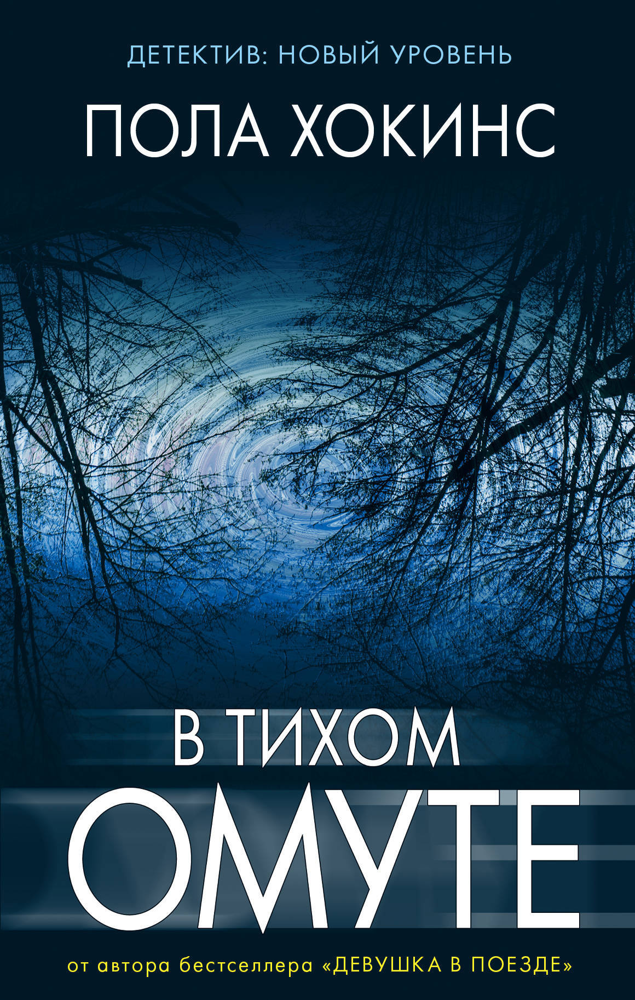
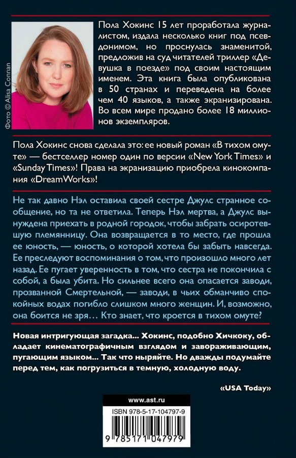
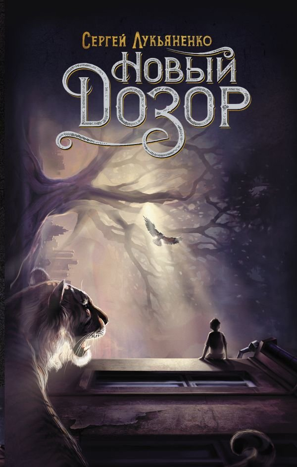
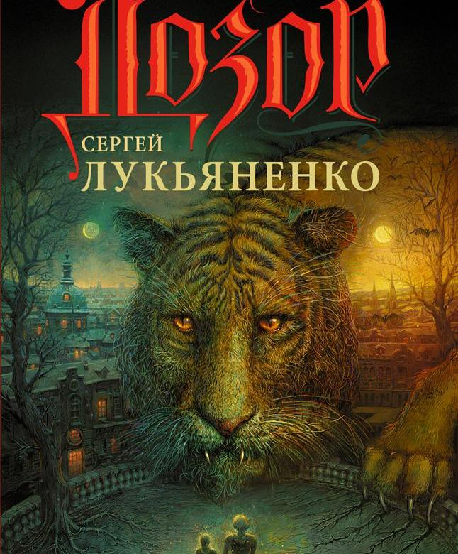
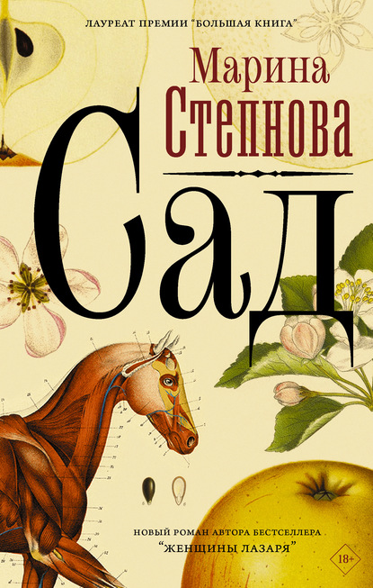
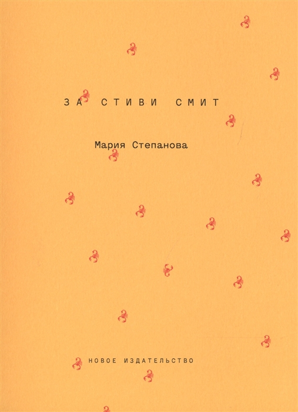

BOOKS

Книжный интернет-магазин «КНИГИ» — магазин книг и канцелярских товаров.
В тихом омуте

В небольшом английском городке Бекфорд в течение нескольких месяцев происходит два самоубийства. Сначала погибает пятнадцатилетняя Кэти, а затем Нел, чья дочь Лина была лучшей подругой Кэти. Происходит это в Смертельной заводи, которая пользуется дурной славой у местных жителей: слишком много женщин рассталось с жизнью именно здесь. Расследует оба случая Шон Таунсенд, а затем к нему подключается и Эрин Морган. Каждый из жителей рассказывают свою часть истории, делится предположениями и вспоминает прошлое. А для Шона и Эрин кусочки мозаики складываются в пугающую картину жизни этих людей. В прошлом каждого героя есть своя тайна... И тайна эта ведет к трагедии, произошедшей с Кэти и Нел.

Новый дозор

Роман российского писателя-фантаста Сергея Лукьяненко, пятый из серии произведений, рассказывающих о вымышленном мире Иных. Роман был впервые опубликован издательством «АСТ» в 2012 году. Состоит из трёх повестей — «Смутные цели», «Смутные времена» и «Смутные деяния». Вместе с романами «Ночной Дозор», «Дневной Дозор», «Сумеречный Дозор», «Последний Дозор», «Шестой Дозор», а также несколькими рассказами писателя и рядом произведений других авторов входит в цикл «Дозоры».

Сад

Середина девятнадцатого века. У князя и княгини Борятинских рождается поздний и никем не жданный ребенок — девочка, которая буквально разваливает семью, прежде казавшуюся идеальной. Туся с самого начала не такая, как все. В строгих рамках общества, полного условностей, когда любой в первую очередь принадлежит роду, а не себе самому, она ведет себя как абсолютно — ненормально даже — независимый человек. Сама принимает решения — когда родиться и когда заговорить. Как вести себя, чем увлекаться, кого любить или ненавидеть. История о том, как трудно быть свободным человеком в несвободном мире.
